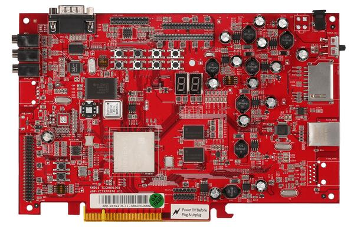
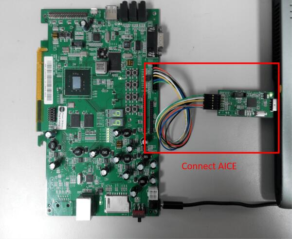

ADP-XC7K AE350
Overview
ADP-XC7K AE350 board is for AndeShape AE350 platform on ADP-XC7K series FPGA-based development boards.
ADP-XC7K series are FPGA-based development and prototyping boards for evaluation of variety of AndesCore processors and AndeShape SoC platform IPs. AE350 is a RISC-V platform which can integrate AndesCore CPUs with a collection of fundamental peripheral IPs.
1st figure shows the green PCB is ADP-XC7K160 and 2nd figure shows the red PCB is ADP-XC7K410.


More information can be found on ADP-XC7K160/410 [1] and AndeShape AE350 [2] websites.
Hardware
The ADP-XC7K AE350 platform integrates 1 ~ 4 cores 32/64-bit 60MHz RISC-V CPUs, DSP, 1GB RAM, Cache, SPI flash memory, ethernet controller and other peripherals.
The ADP-XC7K AE350 platform provides following hardware components:
1 ~ 4 cores 32/64-bit 60MHz AndeStar v5 RISC-V CPUs
1GB on-board SDRAM
2MB SPI flash memory (1MB can be used for XIP)
UART
I2C
SPI
GPIO
PWM
DMA
10/100 Ethernet RJ45 port
LCD module connector
16KB I2C EEPROM
SD memory card slot
MIC-in, Line-in, and Line-out with AC97 audio codec
Supported Features
The adp_xc7k board supports the hardware features listed below.
- on-chip / on-board
- Feature integrated in the SoC / present on the board.
- 2 / 2
-
Number of instances that are enabled / disabled.
Click on the label to see the first instance of this feature in the board/SoC DTS files. -
vnd,foo -
Compatible string for the Devicetree binding matching the feature.
Click on the link to view the binding documentation.
adp_xc7k/ae350 target
Type |
Location |
Description |
Compatible |
|---|---|---|---|
CPU |
on-chip |
Andes Technology RISC-V core from the AndesCore v5 series8 |
|
Cache |
on-chip |
AndesTech L2 cache1 |
|
Counter |
on-chip |
This is a representation of the Andes Technology atcpit100 PIT node1 |
|
DMA |
on-chip |
Andes DMA controller channel: a phandle to the DMA controller plus the following four integer cells:1 |
|
GPIO & Headers |
on-chip |
Andes Technology ATCGPIO100 GPIO Controller1 |
|
I2C |
on-chip |
AndesTech ATCIIC100 I2C1 |
|
Input |
on-board |
Group of GPIO-bound input keys1 |
|
Interrupt controller |
on-chip |
RISC-V CPU interrupt controller8 |
|
on-chip |
SiFive RISCV-V platform-local interrupt controller2 |
||
LED |
on-board |
Group of GPIO-controlled LEDs1 |
|
Mailbox |
on-chip |
AndesTech MBOX PLIC-SW1 |
|
MTD |
on-board |
I2C EEPROMs compatible with Atmel’s AT24 family1 |
|
on-board |
Properties supporting Zephyr spi-nor flash driver (over the Zephyr SPI API) control of serial flash memories using the standard M25P80-based command set1 |
||
on-board |
Fixed partitions of a flash (or other non-volatile storage) memory1 |
||
Serial controller |
on-chip |
||
SPI |
on-chip |
This binding gives a representation of Andes ATCSPI200 SPI controller2 |
|
SRAM |
on-chip |
Generic on-chip SRAM1 |
|
System controller |
on-chip |
System Controller Registers R/W1 |
|
Timer |
on-chip |
RISC-V Machine Timer1 |
|
Watchdog |
on-chip |
Andes Watchdog driver1 |
adp_xc7k/ae350/clic target
Type |
Location |
Description |
Compatible |
|---|---|---|---|
CPU |
on-chip |
Andes Technology RISC-V core from the AndesCore v5 series1 |
|
Cache |
on-chip |
AndesTech L2 cache1 |
|
Counter |
on-chip |
This is a representation of the Andes Technology atcpit100 PIT node1 |
|
DMA |
on-chip |
Andes DMA controller channel: a phandle to the DMA controller plus the following four integer cells:1 |
|
GPIO & Headers |
on-chip |
Andes Technology ATCGPIO100 GPIO Controller1 |
|
I2C |
on-chip |
AndesTech ATCIIC100 I2C1 |
|
Input |
on-board |
Group of GPIO-bound input keys1 |
|
Interrupt controller |
on-chip |
RISC-V core local interrupt controller1 |
|
LED |
on-board |
Group of GPIO-controlled LEDs1 |
|
MTD |
on-board |
I2C EEPROMs compatible with Atmel’s AT24 family1 |
|
on-board |
Properties supporting Zephyr spi-nor flash driver (over the Zephyr SPI API) control of serial flash memories using the standard M25P80-based command set1 |
||
on-board |
Fixed partitions of a flash (or other non-volatile storage) memory1 |
||
Serial controller |
on-chip |
||
SPI |
on-chip |
This binding gives a representation of Andes ATCSPI200 SPI controller2 |
|
SRAM |
on-chip |
Generic on-chip SRAM1 |
|
System controller |
on-chip |
System Controller Registers R/W1 |
|
Timer |
on-chip |
RISC-V Machine Timer1 |
|
Watchdog |
on-chip |
Andes Watchdog driver1 |
Connections and IOs
The ADP-XC7K AE350 platform has 1 GPIO controller. It providing 32 bits of IO. It is responsible for pin input/output, pull-up, etc.
Mapping from GPIO controller to the ADP-XC7K board pins:
GPIO controller |
Usage / Board pins |
|---|---|
Push Buttons |
|
GPIO.0 |
SW1 |
GPIO.1 |
SW2 |
GPIO.2 |
SW3 |
GPIO.3 |
SW4 |
GPIO.4 |
SW5 |
GPIO.5 |
SW6 |
GPIO.6 |
SW7 |
7-Segment LED1 |
|
GPIO.16 |
7SEG1.A |
GPIO.17 |
7SEG1.B |
GPIO.18 |
7SEG1.C |
GPIO.19 |
7SEG1.D |
GPIO.20 |
7SEG1.E |
GPIO.21 |
7SEG1.F |
GPIO.22 |
7SEG1.G |
GPIO.23 |
7SEG1.DP |
7-Segment LED2 |
|
GPIO.24 |
7SEG2.A |
GPIO.25 |
7SEG2.B |
GPIO.26 |
7SEG2.C |
GPIO.27 |
7SEG2.D |
GPIO.28 |
7SEG2.E |
GPIO.29 |
7SEG2.F |
GPIO.30 |
7SEG2.G |
GPIO.31 |
7SEG2.DP |
GPIO pins |
|
GPIO.7 |
IDE_CON1.4 |
GPIO.8 |
IDE_CON1.6 |
GPIO.9 |
IDE_CON1.8 |
GPIO.10 |
IDE_CON1.10 |
GPIO.11 |
IDE_CON1.11 |
GPIO.12 |
IDE_CON1.12 |
GPIO.13 |
IDE_CON1.13 |
GPIO.14 |
IDE_CON1.14 |
GPIO.15 |
IDE_CON1.15 |
Other peripheral mapping are listed below:
Peripherals |
Usage / Board pins |
|---|---|
SPI_1 |
internal connected to SPI Flash |
SPI_2_CS |
IDE_CON1.37 |
SPI_2_MOSI |
IDE_CON1.36 |
SPI_2_MISO |
IDE_CON1.38 |
SPI_2_SCLK |
IDE_CON1.35 |
I2C_SDA |
J27.1 |
I2C_SCL |
J27.2 |
System Clock
The ADP-XC7K AE350 platform has 60MHz core clock.
Serial Port
The ADP-XC7K AE350 platform has 2 UARTs. The Zephyr console output is by default assigned to UART2 and the default settings are 115200 8N1.
Programming and debugging
The adp_xc7k board supports the runners and associated west commands listed below.
| flash | debug |
|---|
For debugging zephyr applications or burning them into a flash, you will need to connect Andes ICE from host computer to ADP-XC7K board and execute the Andes ICE management software, ICEman, on this host computer.
Connecting Andes ICE (AICE)
AICE is used for flashing and debugging the board. Please connect AICE to both ADP-XC7K board and the host computer as shown in the figure.

More information can be found on AICE-MINI+ [3], AICE-MICRO [4] website
Building
You can build applications in the usual way. Here is an example for the Hello World application.
# From the root of the zephyr repository
west build -b adp_xc7k/ae350 samples/hello_world
Flashing
Before flashing, you have to download ICEman (ice.zip) from the
Andes Development Kit [5].
If you want to use XIP mode (CONFIG_XIP=y), you also need to download
the flash burner (flash.zip).
At first, you should run ICEman when flashing and debugging program.
# Enable execute file permission of ICEman
chmod a+x ./ICEman
# Running the ICEman server
sudo ./ICEman -Z v5
Note
To run ICEman commands as a normal user, you will need to install the
70-ndsusb-v1.rules udev rules file (usually by placing it in
/etc/udev/rules.d, then unplugging and plugging the
AICE adapter in again via USB.).
If CONFIG_XIP=n, you can load the program (zephyr.elf) into RAM directly
and execute it.
# Check the ICEman server is running
# Load the program into RAM and execute it
riscv64-zephyr-elf-gdb build/zephyr/zephyr.elf
(gdb) target remote :1111
(gdb) monitor reset halt
(gdb) load
(gdb) quit
If CONFIG_XIP=y, you need to burn the program (zephyr.bin) into flash memory
and execute it.
# Check the ICEman server is running
# Burn the program into flash and execute it
<FLASH>/bin/target_burn_frontend \
-P 4444 --unlock --verify --image=build/zephyr/zephyr.bin \
--algorithm-bin=<FLASH>/target_bin/target_SPI_v5_[32|64].bin
# Note:
# 1. Assume the flash burner is downloaded to <FLASH> directory
# 2. For algorithm-bin file, use target_SPI_v5_32.bin in RV32 platform and
# use target_SPI_v5_64.bin in RV64 platform
Open a serial terminal with the following settings:
Speed: 115200
Data: 8 bits
Parity: None
Stop bits: 1
you should see the following message in the terminal:
***** Booting Zephyr OS v2.4.0 *****
Hello World! adp_xc7k
Debugging
# Check the ICEman server is running
# Load and debug program
./riscv64-zephyr-elf-gdb build/zephyr/zephyr.elf
(gdb) target remote :1111
(gdb) monitor reset halt
(gdb) load
If CONFIG_XIP=y, please follow the flashing section to burn the program into
flash memory first.
Then, you can use GDB to debug program by above commands but do NOT execute load
command since the program has been placed in the flash memory.